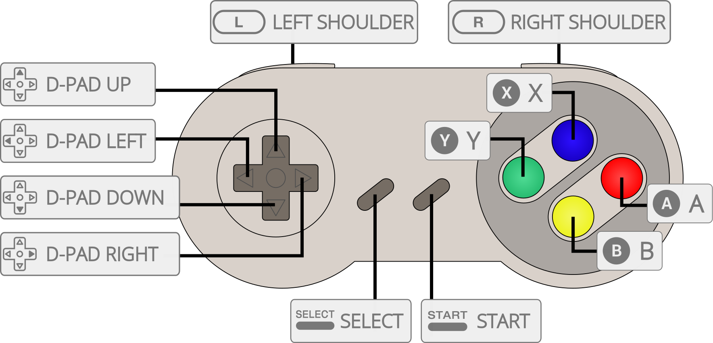

bsnes is a Super Nintendo emulator that began development on 2004-10-14. It focuses on accuracy and clean code above all else. It never uses speed or compatibility hacks. As a result, the minimum system requirements are greater than with other emulators. bsnes comes in three different profiles (accuracy, balanced and performance) which contain minor differences in the PPU (graphics) emulation.
This core has been compiled with the Balanced profile.
Highly accurate SNES emulation. Whether to use the Accuracy, or Balanced or Performance core depends on how much accuracy you want to give up for game performance.
Please check the compatibility section for more information.
The bsnes Balanced core has been authored by
The bsnes Balanced core is licensed under
A summary of the licenses behind RetroArch and its cores can be found here.
Content that can be loaded by the bsnes Balanced core have the following file extensions:
RetroArch database(s) that are associated with the bsnes Balanced core:
Required or optional firmware files go in the frontend's system directory.
!!! attention The bsnes Balanced core uses split ROMS for special chip games.
Notable DSP1/DSP1B Games:
Notable DSP2 Games:
Notable DSP3 Games:
Notable DSP4 Games:
Notable Cx4 Games:
| Filename | Description | md5sum |
|---|---|---|
| dsp1.data.rom | DSP1 co-processor firmware | 3d81b45fa0c2aa8b852dfb1ece7c0971 |
| dsp1.program.rom | DSP1 co-processor firmware | ae209fbe789fbf11a48aea5ab1197321 |
| dsp1b.data.rom | DSP1B co-processor firmware | 1e3f568634a7d8284020dddc0ae905bc |
| dsp1b.program.rom | DSP1B co-processor firmware | d10f446888e097cbf500f3f663cf4f6d |
| dsp2.data.rom | DSP2 co-processor firmware | e9417e29223b139c3c4b635a2a3b8744 |
| dsp2.program.rom | DSP2 co-processor firmware | aa6e5922a3ed5ded54f24247c11143c5 |
| dsp3.data.rom | DSP3 co-processor firmware | 0a81210c0a940b997dd9843281008ee6 |
| dsp3.program.rom | DSP3 co-processor firmware | d99ca4562818d49cee1f242705bba6f8 |
| dsp4.data.rom | DSP4 co-processor firmware | ee4990879eb68e3cbca239c5bc20303d |
| dsp4.program.rom | DSP4 co-processor firmware | a151023b948b90ffc23a5b594bb6fef2 |
| cx4.data.rom | CX4 co-processor firmware | 037ac4296b6b6a5c47c440188d3c72e3 |
| st010.data.rom | ST010 co-processor firmware | 254d70762b6f59f99c27c395aba7d07d |
| st010.program.rom | ST010 co-processor firmware | 1d70019179a59a566a0bb5d3f2845544 |
| st011.data.rom | ST011 co-processor firmware | 10bd3f4aa949737ab9836512c35bcc29 |
| st011.program.rom | ST011 co-processor firmware | 95222ebf1c0c2990bcf25db43743f032 |
| st018.data.rom | ST018 co-processor firmware | 49c898b60d0f15e90d0ba780dd12f366 |
| st018.program.rom | ST018 co-processor firmware | dda40ccd57390c96e49d30a041f9a9e7 |
| sgb.boot.rom | Super Game Boy BIOS |
Frontend-level settings or features that the bsnes Balanced core respects.
| Feature | Supported |
|---|---|
| Restart | ✔ |
| Screenshots | ✔ |
| Saves | ✔ |
| States | ✔ |
| Rewind | ✔ |
| Netplay | ✔ |
| Core Options | ✕ |
| RetroAchievements | ✔ |
| RetroArch Cheats | ✔ |
| Native Cheats | ✕ |
| Controls | ✔ |
| Remapping | ✔ |
| Multi-Mouse | - |
| Rumble | ✕ |
| Sensors | ✕ |
| Camera | ✕ |
| Location | ✕ |
| Subsystem | ✔ |
| Softpatching | ✔ |
| Disk Control | ✕ |
| Username | ✕ |
| Language | ✕ |
| Crop Overscan | ✔ |
| LEDs | ✕ |
The bsnes Balanced core's internal core name is 'bsnes'
The bsnes Balanced core saves/loads to/from these directories.
Frontend's Save directory
Frontend's State directory
!!! warning Super GameBoy support in this core is Windows only, and has buggy save state support and visual glitches. Use the higan Accuracy core or the nSide Balanced core for simplified, functional, and easily accessible Super Gameboy support.
For Super GameBoy support, you need sgb.boot.rom (in RetroArch's System directory), a GameBoy ROM and a Super GameBoy ROM.
Please note that the Game Boy and Super GameBoy ROMs have to be unzipped.
Super GameBoy is supported via the Subsystem API.
There are two ways to access the Subsystem API.
One way is to access the Subsystem API through RetroArch's GUI like this.
First, we load our GameBoy ROM through 'Load Super GameBoy' in RetroArch's Main Menu.

Next, we load our Super GameBoy ROM through 'Load Super GameBoy' in RetroArch's Menu Menu.


Then, we start the content by selecting 'Start GameBoy' In RetroArch's Menu Menu.

The other way is to launch RetroArch with commandline like this.
retroarch -L {path to bsnes core} {path to Super GameBoy ROM} --subsystem sgb {path to GameBoy rom}
!!! attention MSU-1 support in this core is complex. Use the Snes9x core for simplified and easily accessible MSU-1 support.
MSU-1 support can be used by loading a correct .bml file.
There's documentation for loading MSU-1 games in standalone higan here.
The bsnes Balanced core supports the following device type(s) in the controls menu, bolded device types are the default for the specified user(s):
Activating multitap support in compatible games can be configured by switching to the Multitap device type for User 2.

| User 1 - 5 Remap descriptors | RetroPad Inputs |
|---|---|
| B |  |
| Y |  |
| Select |  |
| Start |  |
| D-Pad Up |  |
| D-Pad Down |  |
| D-Pad Left |  |
| D-Pad Right |  |
| A |  |
| X |  |
| L |  |
| R |  |
| RetroMouse Inputs | SNES Mouse |
|---|---|
 Mouse Cursor Mouse Cursor |
SNES Mouse Cursor |
 Mouse 1 Mouse 1 |
SNES Mouse Left Button |
 Mouse 2 Mouse 2 |
SNES Mouse Right Button |
| RetroLightgun Inputs | SuperScope | Justifier(s) |
|---|---|---|
| Gun Crosshair |
SuperScope Crosshair | Justifier Crosshair |
| Gun Trigger | SuperScope Trigger | Justifier Trigger |
| Gun Aux A | SuperScope Cursor | |
| Gun Aux B | SuperScope Turbo | |
| Gun Start | SuperScope Pause | Justifier Start |
| Game | Issue |
|---|---|
| A.S.P. Air Strike Patrol | Black lines show up during gameplay. The shadow below the aircraft is missing. |